A REAL-TIME DITHERED CAMERA
FOR THE WEB
YOUR CAMERA, CIRCA 1989.
di_ther quantizes your live camera feed through a Bayer 4×4 ordered dithering matrix and a handful of hard-coded palettes. Highlights bloom into dot clusters. Shadows collapse to pure black. The mundane turns monumental.
It is not a filter. It never touches your old photos. It is a feeling-first camera toy — open the page, point, and watch the street outside render like a lost VGA cutscene. Everything happens on your device. Nothing leaves it.
PICK A PALETTE.
WATCH IT BREATHE.
This is the same math the camera runs — a live procedural scene crushed through Bayer 4×4 ordered dithering, right here in your browser. Move your cursor over the frame. Switch palettes. That's the whole trick, and it's enough.
SHOT ON di_ther.
ZERO EDITS.
Real frames, straight out of the camera. Night streets, flash-lit friends, one good dog.
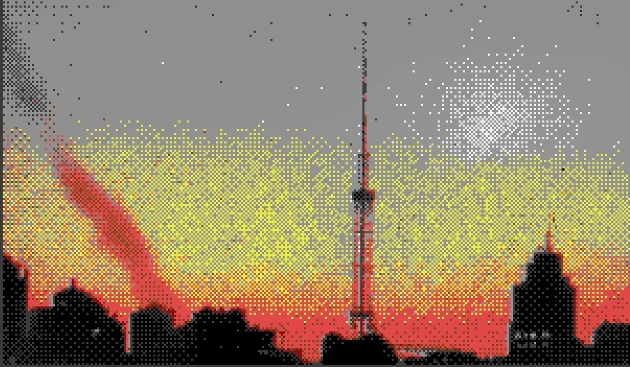
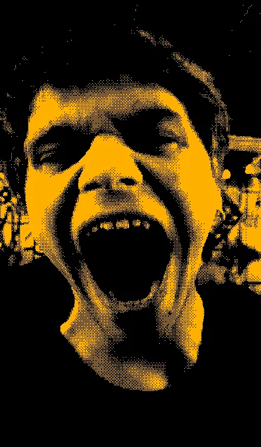
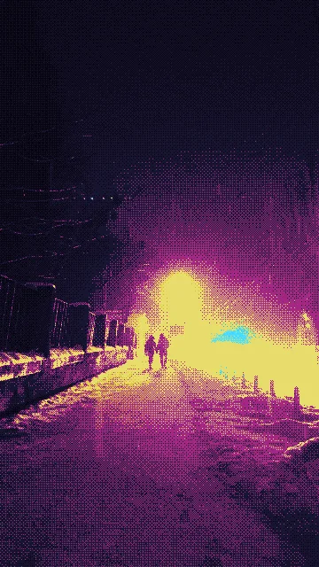
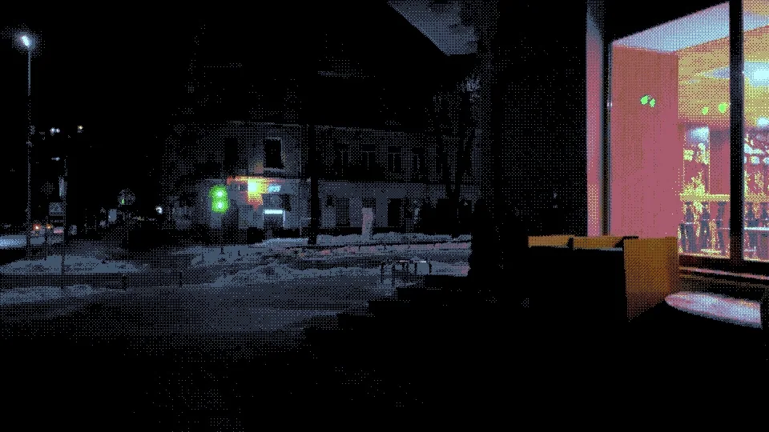
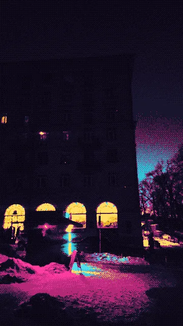
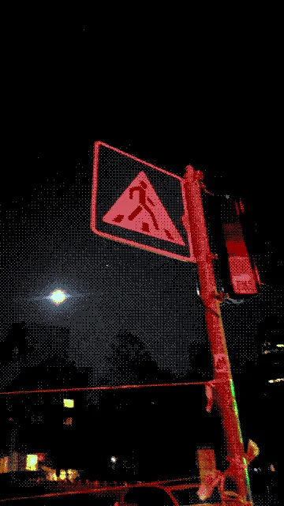
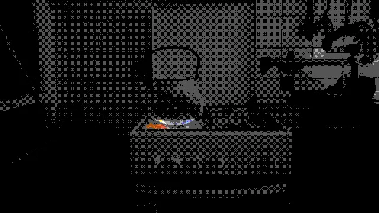
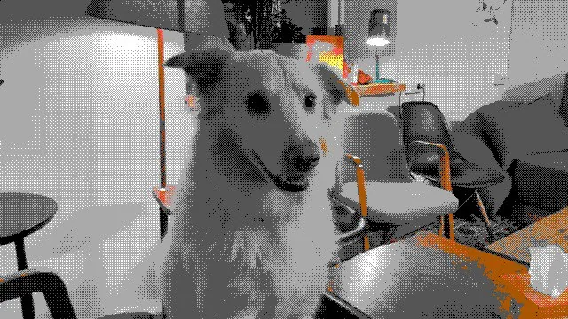
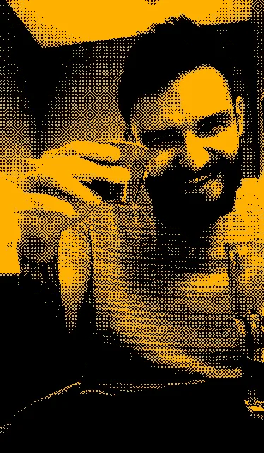
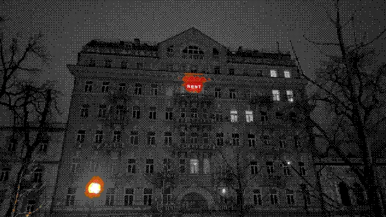
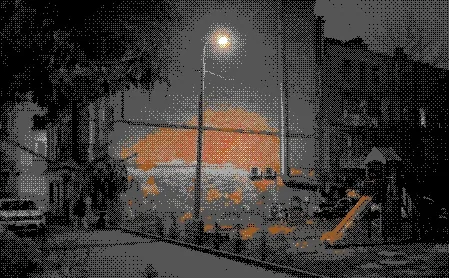
RUNS ON ANYTHING.
| ENGINE | BAYER 4×4 ORDERED DITHERING |
| INPUT | YOUR LIVE CAMERA — NOTHING ELSE |
| PALETTES | LIMITED. ON PURPOSE. |
| OUTPUT | SHAREABLE STILLS, INSTANTLY |
| LATENCY | REAL-TIME. SIXTY FRAMES PER SECOND. |
| ACCOUNT | NONE |
| UPLOAD | NEVER — ALL ON-DEVICE |
| EDITING SUITE | ABSOLUTELY NOT |
| PRICE | FREE, LIKE 1989 SHAREWARE |
THE STREET IS ALREADY RENDERING WITHOUT YOU
STOP SCROLLING. START SHOOTING.
LAUNCH di_ther ↗NO INSTALL · NO SIGN-UP · WORKS IN YOUR BROWSER · BRING NIGHT